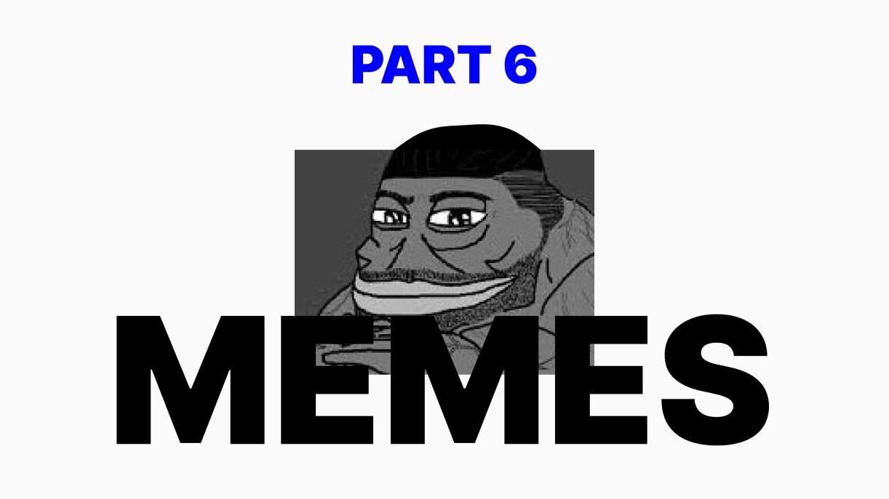
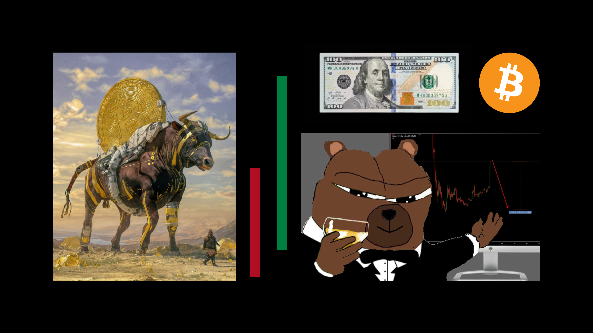
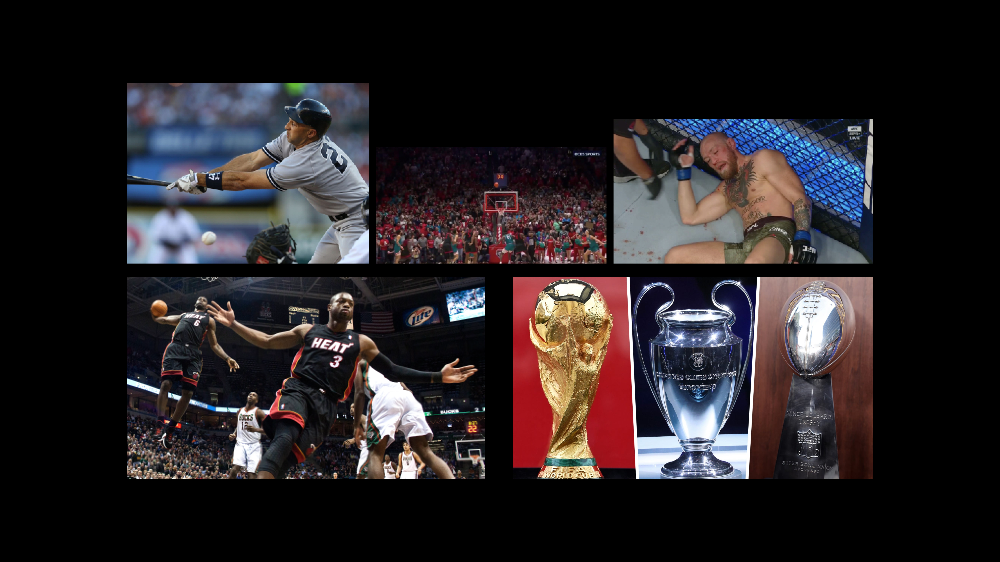
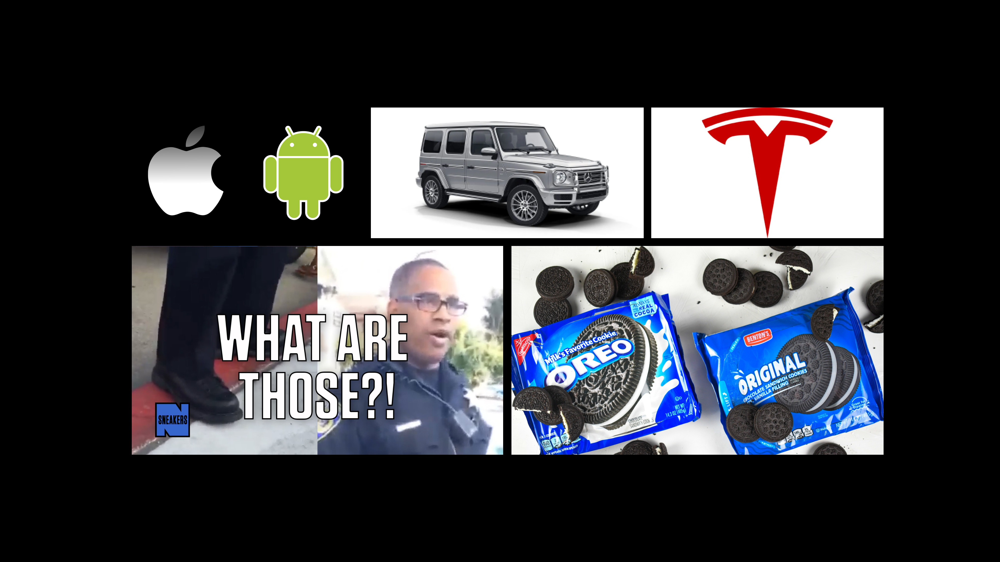
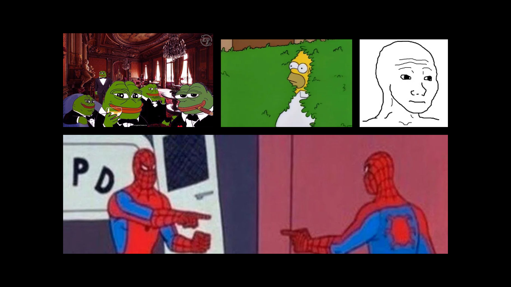
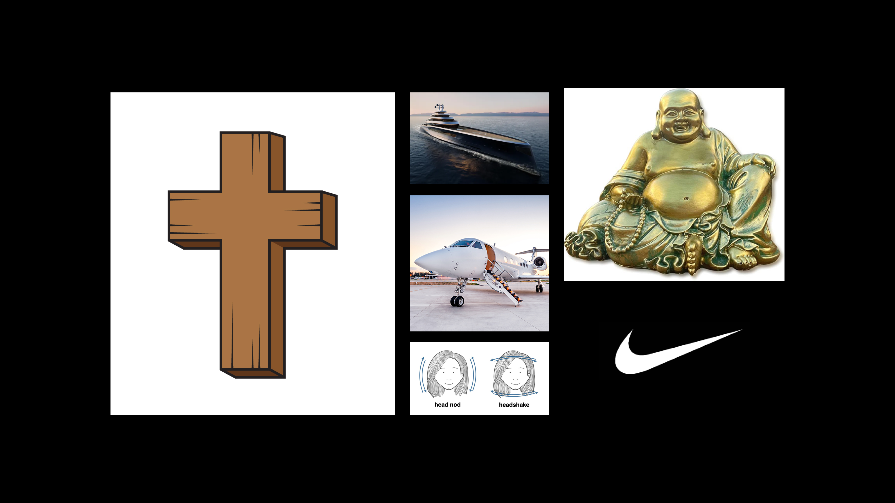

Providing examples of various structures, functions, and means of transfer
Previous parts:
A Non-Technical & Highly Speculative Look at Memes: Part 1
A Non-Technical & Highly Speculative Look at Memes: Part 2
A Non-Technical & Highly Speculative Look at Memes: Part 3
A Non-Technical & Highly Speculative Look at Memes: Part 4
A Non-Technical & Highly Speculative Look at Memes: Part 5
We have covered:
- the introduction
- the multi-layered definitions
- production layer
- design layer
- universal layer
At this point it would be most helpful to cover a multitude of memes, from various parts of the spectrum. We will touch on most of them at the surface layer, so if more context is needed please revisit parts 1-5 for how we arrive at these conclusions.
Finance Memes
Within the finance part of the spectrum memes are mainly focused on value - whether that’s monetary capital, social capital, attention capital, or resource capital.
Bull/Bear
Rather than lengthy diatribes on how you feel about markets or specific investments, people will simply say ‘bullish’ or ‘bearish’. This is an efficient way of expressing deeper market sentiments.
Red/Green
One of the hardest meme vessels to pin down is color, yet in finance everyone understands this meme.
Red means bad; the number went down. Green means good; you’re making money.
USD/BTC
Currency is a meme. $USD tells you that you can buy things in North America. Bitcoin not only tells you where you can spend that money, it also tells people some of your values (decentralization, financial sovereignty, etc).
Sports Memes
The sports corner of the spectrum usually deals with merit and/or accomplishments - whether that is at the individual or collective level.
Whiff/Airball/Knockout
The acknowledgement of others failures is a sticky dynamic. Sports are separate enough from daily-personal lives that can you see an uptick in willingness to dive into such stickiness.
Failure, rejection, mistakes, devastation, etc are all part and parcel to the world. ‘Dunking’ on someone, calling out their ‘whiff’, replying with a ‘knockout’, etc - these are all methods to confront the stickier side of humanity through a meme less attached to personal identifiers.
Think, if you made an error at work would it be easier if your coworker sent you a text condemning it or an image of a baseball player whiffing?
Trophies
The Lombardi trophy, the Champions League trophy, the World Cup trophy… they all signal the apex of the contextual collective. If you wish to understand why a contingent of western society fathers are unhappy with participation trophies, examine memes.
The trophy or medal is a meme for the merit and accomplishments of the recipient. If someone wins gold at the Olympics we all understand more about that individual without any conversation needed. We know more about their effort, discipline, execution, and focus. The trophies color in the behind-closed-doors parts of the person.
Consumer Memes
At the consumer section of the meme spectrum we are mainly dealing with status signaling. In a world where we all share one common race, it is important for humans to differentiate themselves from each other, as well as get accurate reads on strangers.
Knock Off v. Brand Name
A way of assessing financial ranking relative to each other. Also a way of differentiating where one believes their to be a gap in ‘class’ (ie. “you’re the knockoff version of [___]).
G Wagon/Tesla (Apple v. Android)
A way of associating yourself with an in-group and signaling your stature. Tesla drivers signal their values and inspirations. G Wagon drivers signal their tastes, financial class, and inspirations all the same. The car you drive memes your life circumstances, financial achievements, and much more to others whether you enjoy it or not.
The Apple v Android meme is very similar, especially in North America. Luxury items tend to have a similar meme dynamic as vehicles in the consumer sphere.
Emotional Mirror Memes (Templates)
This is the sphere I assume most are acquainted with. The ability for external vessels to translate recognizable emotions digitally is at the core tenants of a meme.
The previous examples are also emotional mirrors, but operate at more vertical layers of abstraction. Templates are essentially emotions captured.
You feel like you’re dealing with a ‘twin’ you post the Spiderman template. You feel like a classy degenerate, you post the business Pepes template. If you feel a more nuanced set of emotions and wish to express it creatively, maybe you use a custom wojak template.
The internet is an emotional mirror template machine. New vessels are created by the hour (fictional and still life from real moments) and one could argue all memes must carry some form of emotional mirroring.
Designer Memes
‘Designer’ is used here in terms of intentionality. This is where I feel much of the spectrum is fertile ground for the individual moving forward.
If you think about things like the Christian cross or the Buddha you feel an ocean of memetic information. The same can be said of something as simple as a head nod or shake from left to right. Anywhere in the world you go, people will understand a behavioral yes or no.
Yachts, private jets, Nike - they all carry a depth of information within their meme structures. They are grouped in the category of design because they have been honed over a long enough time frame, that they have near universal meme transferability.
Designer memes are what I am interested in within this series. How does one turn two planks of wood, a chubby bald man, or a head nod into recognizable vehicles of information that endless amounts of people can interpret?
Part 7
As I mentioned in part 5, this series is targeted at accelerating the meme abilities of creatives in the onchain art space. We have now covered a range of memes with different structures, functions, and means of transfer.
Next we will construct a new piece of art from the ground up. Then we will examine its memeware for further context on the interconnected nature of this concept with what creatives do inherently.